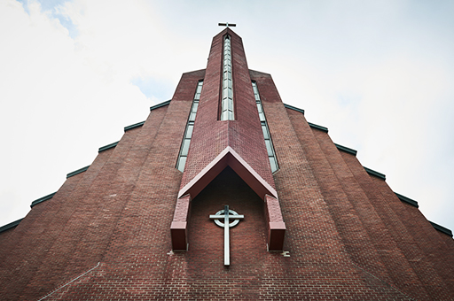

@@include('static/include/head.html')
<body>
	<div class="layerfullWrap">
		<!-- 헤더영역 -->
		@@include('static/include/layer_header.html',{
			"title":"주변 즐길거리"
		})
		<!-- //헤더영역 -->	

	<!-- 컨텐츠 영역 -->
	<section id="layerContent">		
		<div class="activityWrap">
			<div class="fullWidth"></div>
			<h2>내리교회</h2>
			<p class="descText">1885년인천 지역에 북감리회 선교사 헨리 아펜젤러가 세운 교회입니다. 한국 최초의 교회 중 하나로 신자들은 한국의 어머니교회라고도 부릅니다.</p>
			<p class="imgSource">이미지출처 : 인천관광공사 홈페이지</p>
			<div class="fullWidth container">
				<dl class="info">
					<dt>이용안내</dt>
					<dd><a href="tel:032-760-4000">032-760-4000</a></dd>
					<dt>주소</dt>
					<dd>인천광역시 중구 우현로67번길 3-1</dd>
				</dl>
			</div>
		</div>
	</section>
	<!-- //컨텐츠 영역 -->

</body>
</html>